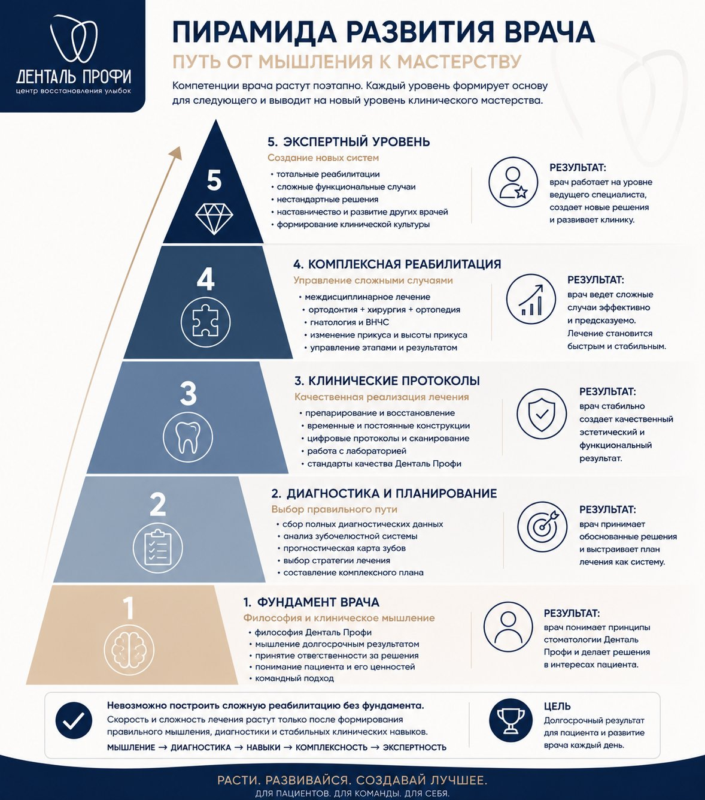

Практическое задание
Составление комплексного плана лечения
После изучения принципов диагностики и планирования комплексной реабилитации Денталь Профи примените их на реальных клинических случаях.
Цель задания – научиться не просто заполнять шаблон плана лечения, а пройти полный путь клинического мышления:
Данные → Анализ → Прогноз → Стратегия → Этапность → План лечения
Хороший врач начинает не с вопроса «Что сделать пациенту?»
Он задает вопросы:
- Почему возникла проблема?
- Какие зубы имеют долгосрочный прогноз?
- В какой системе находится пациент?
- Нужно ли менять эту систему?
- Какой путь даст стабильный результат?
Ваше задание
После завершения теоретического блока и согласования с наставником вы переходите к практическому этапу – самостоятельному составлению комплексных планов лечения.
Исходные данные:
- анамнез и жалобы;
- фотопротокол;
- КТ;
- дополнительные диагностические данные.
1. Провести диагностику
Уметь читать КТ-обследования.
Оценить:
- уровень гигиены;
- состояние ВНЧС;
- состояние каждого зуба;
- отсутствующие зубы;
- прикус;
- эстетику.
2. Заполнить прогностическую карту
Для каждого зуба определить:
- пародонтологический прогноз;
- реставрационный прогноз;
- эндодонтический прогноз.
Решение:
- сохранить;
- восстановить;
- удалить.
3. Выбрать стратегию лечения
Определить основной путь:
- конформативное лечение;
- ортодонтическая подготовка;
- функциональная реабилитация;
- реконструкция прикуса;
- имплантационная реабилитация;
- компромиссный план.
4. Составить этапность лечения
Определить последовательность:
- подготовка;
- санация;
- ортодонтия;
- хирургия;
- ортопедия;
- поддержание результата.
5. Оформить итоговый план лечения
План должен быть понятен:
- пациенту;
- координатору;
- другим специалистам.
Главный критерий оценки
Оценивается не только правильность плана.
Главное – клиническое мышление:
- видит ли врач всю систему;
- понимает ли причины проблем;
- может ли объяснить стратегию понятным языком пациенту;
- учитывает ли долгосрочный прогноз.
В комплексной реабилитации важно не только знать, что сделать. Важно понимать:
Почему именно этот путь является лучшим для конкретного пациента?
Разберите составленный план с наставником, задайте вопросы и доработайте решения с учетом долгосрочного прогноза.
